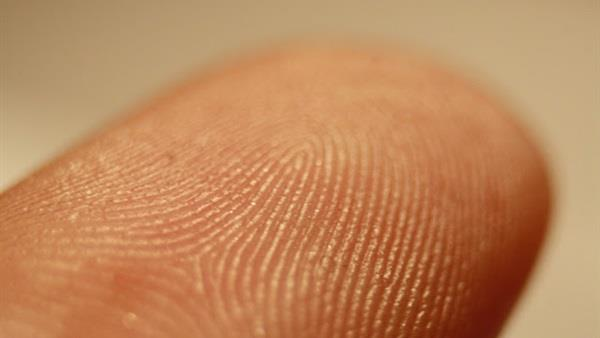
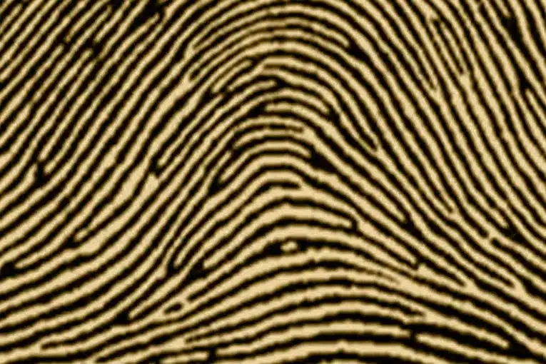
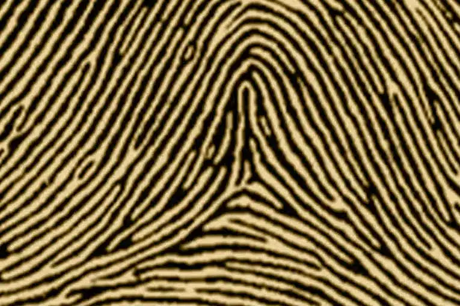
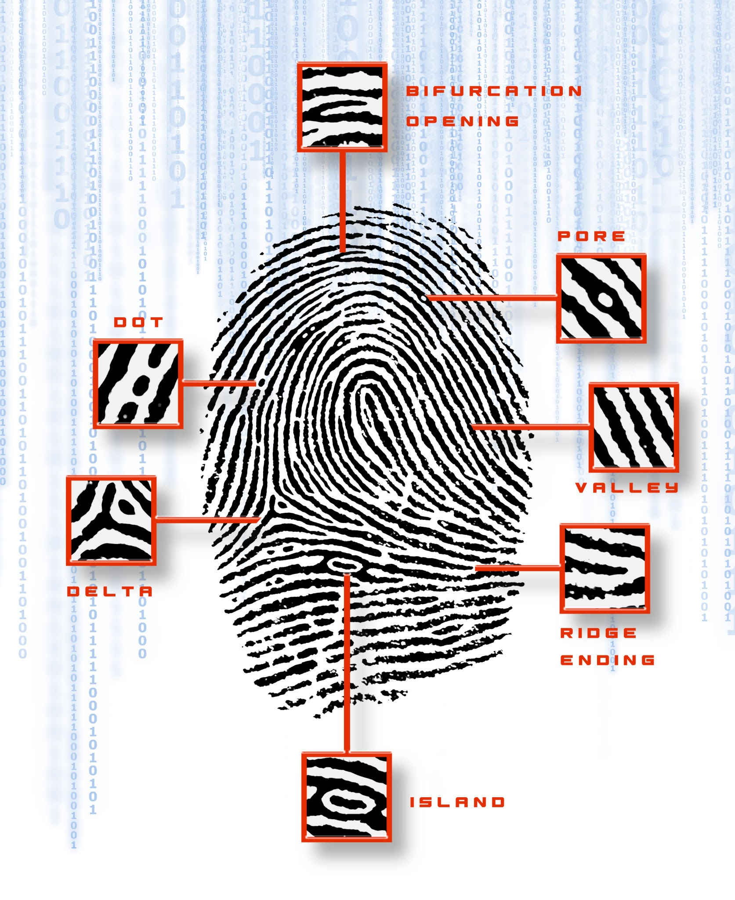
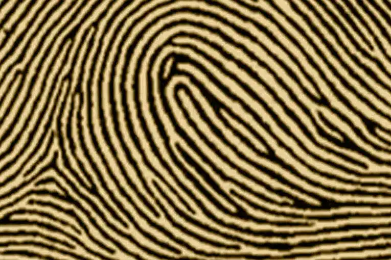
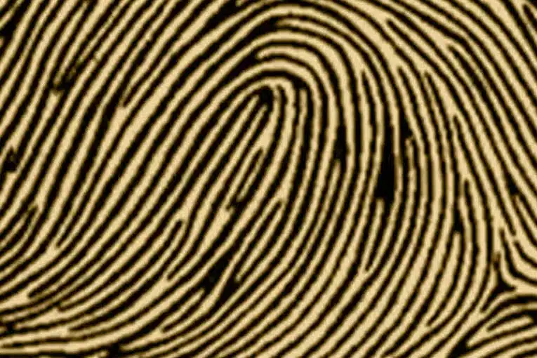
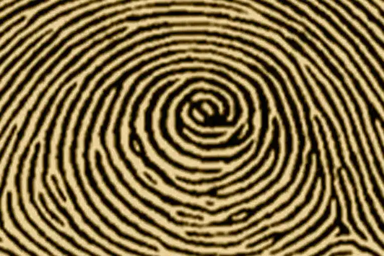
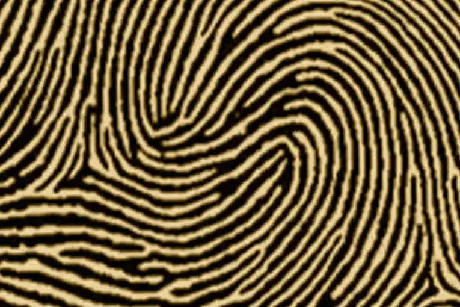
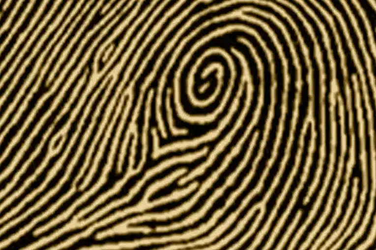
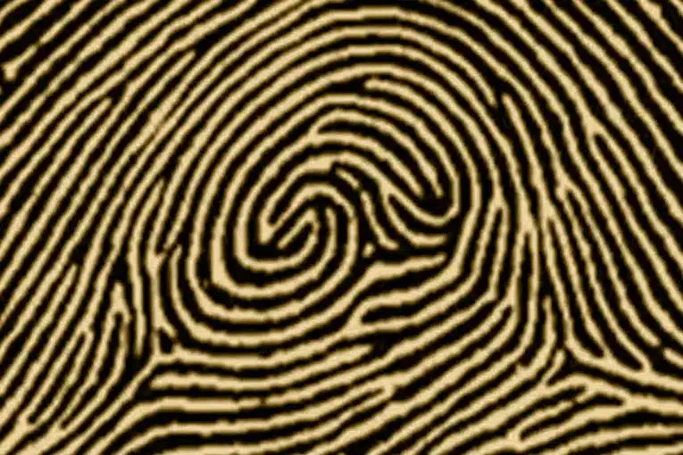

FINGERPRINT

Introduction
Fingerprints are a pattern of skin ridges (friction ridges) on the fingertips, which form in the fetus between weeks 10-16 of pregnancy and remain constant throughout life except in cases of severe injuries or diseases such as leprosy.
Fingerprints are the unique patterns of ridges and grooves on the tips of fingers. These patterns form during fetal development and remain unchanged throughout a person’s life. Fingerprints are categorized into three main types: arches, loops, and whorls, with each group having unique subtypes. No two fingerprints are identical, even among identical twins, making them a reliable tool for identification. Their uniqueness and permanence have made fingerprints essential in forensic science, security systems, and medical research, helping solve crimes and ensure personal safety.
Fingerprints are not randomly generated, but rather determined by our genes and our environment. Fingerprints begin to form in the womb, around the 10th week of pregnancy, when the skin on the fingers starts to grow and differentiate.The shape and size of the fingerprints are influenced by the pressure, temperature, and movement of the amniotic fluid, as well as the position and growth of the fetus. Fingerprints are fully formed by the 24th week of pregnancy, and they remain unchanged throughout our lives, unless they are damaged by injury or disease.
Humans are not the only animals that have fingerprints. Many primates, such as chimpanzees, gorillas, and orangutans, also have fingerprints that are similar to ours. Some other mammals, such as koalas, pandas, and raccoons, also have fingerprints, but they are different from ours and from each other. Fingerprints are thought to have evolved independently in different species, as a result of adaptation to their environment and lifestyle. Fingerprints may help animals grip objects, sense textures, or communicate with each other.
You may think that your fingerprints are the same on all your fingers, but that is not true. Each finger has its own unique fingerprint, and even your left and right hands have different fingerprints. The reason for this is that fingerprints are not symmetrical, but rather asymmetrical, meaning that they are not identical on both sides of a line of symmetry. The asymmetry of fingerprints is caused by the random and complex interactions of genes and environment during the…
Types
Plain Arch

The Plain Arch fingerprint pattern consists of lines that extend smoothly from one side of the finger to the other in a wave-like motion. The lines rise slightly in the center without forming sharp angles or sudden curves. This pattern lacks the structural complexities seen in loops or whorls, and, most importantly, it contains no deltas (the usual triangular formations), which makes it easy to identify. Plain arches are the least common type of fingerprint, appearing in only about 5% of the population, yet their simplicity still allows them to play an essential role in fingerprint classification and forensic science.
From the perspective of medical professionals, such as Dermatologists and Geneticists, the simple arch pattern on the fingertips is primarily explained as being the result of the dermal growth pattern during prenatal development. While this pattern is common and usually harmless, it may be associated, in very rare instances, with certain chromosomal abnormalities.
Dr. Harold Cummins (the Father of Modern Dermatoglyphics) and his students observed in the 1960s and 1970s that the plain arch pattern is sometimes associated with a "low ridge count," which may be an indicator of slowed fetal growth between the 13th and 19th weeks of gestation.
Some contemporary practitioners of palmistry, such as those associated with the school of Richard Unger or Baumann & Oberhofer, believe that a high frequency of simple arch patterns on the fingertips indicates specific personality traits. Their interpretation suggests that individuals with this pattern are those who "live solely in the material world," are lacking in imagination, and are extremely practical. Furthermore, they suggest a higher probability of developing Chronic Fatigue Syndrome, Fibromyalgia, or autoimmune issues, although this interpretation is noted to be without strong, documented scientific evidence.
Tented Arch

In this pattern, the ridges rise sharply at the center, creating a peak or tent-like structure. This peak gives the pattern its name. Unlike plain arches, tented arches have a distinct central ridge that forms an angle or spike. This makes them more complex and slightly more common than plain arches, but still relatively rare. Tented arches account for about 1-2% of all fingerprints. The tented arch’s unique structure makes it a fascinating pattern in fingerprint analysis. Its sharp rise sets it apart from other types, making it easily distinguishable.
The Tented Arch pattern is considered the "older, more dramatic brother" of the Plain Arch. It is also relatively rare (appearing in approximately 5–8% of global human fingerprints), though it is slightly more common than the Plain Arch. It is characterized by the presence of a clear "central column" or "tent" in the middle, resembling the letter A or a tent.

Radial Loop

Radial loops are fingerprint patterns that curve toward the thumb. They are named after the radius bone, located on the thumb side of the forearm. The ridges in this pattern enter and exit on the same side of the finger, forming a loop that flows in the direction of the thumb. Radial loops are less common than ulnar loops and are found in a smaller percentage of the population. They are unique due to their specific directional flow, which distinguishes them from other loop patterns. In fingerprint classification, the direction of the loop is critical for accurate identification. Radial loops highlight the importance of understanding ridge flow when analysing prints.
It is the most beautiful and rarest type of Whorls, resembling a peacock's eye or a double rose, and it forms less than 2–3% of human fingerprints globally.
Ulnar Loop

Ulnar loops are the most common fingerprint pattern, present in about 60% of individuals. These loops curve inward toward the little finger, following the direction of the ulna bone in the forearm. The ridges in an ulnar loop enter and exit on the same side of the finger, forming a loop that flows toward the pinky. Ulnar loops are easily recognised and widely studied due to their high occurrence rate. They serve as a foundational pattern in the classification and identification of fingerprints.
Whorl

Whorls are circular or spiral ridge patterns that form complete loops. They are one of the most easily recognizable fingerprint types. Whorls appear in about 30% of the population, making them a relatively common pattern. The defining feature of a whorl is its central ridge, which completes at least one full circle. Whorls often include two deltas, located on opposite sides of the circular ridge pattern. Their clear, circular design makes them easy to classify and compare.
Double Loop

Double loops are intricate patterns that feature two separate loops intertwining around each other. This unique design makes double loops stand out as one of the more complex fingerprint types. The ridges in a double loop form two distinct centers, creating a pattern that resembles an ‘S’ or two opposing loops. This type appears in about 10% of fingerprints, making it less common than ulnar loops but more intricate. Double loops are often a subject of interest in forensic science due to their complexity.
Central Pocket Loop

Central pocket loops combine elements of loops and whorls. The pattern features a loop with a circular or spiral whorl at the center. This pattern is less common than basic loops but more intricate. The ridges in a central pocket loop form a distinctive circular shape within the loop, adding complexity to the overall design.
It is the “most mysterious and exciting” version of the vortex family, accounting for about 5-10% globally (more common in East Asian and South Indian populations and less common in Europe and Africa).
A notable correlation with high levels of analytical and mathematical intelligence (a 2024 Korean-British study of 28,000 university students found that 28% of MIT and Cambridge students majoring in mathematics and theoretical physics had a 4+ Central Pocket).
Accidental

Accidental fingerprints are the rarest and most complex type. They combine features of two or more patterns, often including elements of loops, whorls, and arches. The irregularity of accidental fingerprints makes them challenging to classify. They don’t fit neatly into any single category, which is why they are labeled as ‘accidental’. Their unique structure makes them highly distinctive, providing a reliable basis for individual identification.
The Accidental Fingerprint is the rarest and strangest fingerprint pattern in the entire world; its presence is less than 0.1% of human fingerprints, meaning only about one in every thousand people might have a single one on one finger, and having this pattern on all ten fingers is almost impossible. Its form is a completely chaotic mixture, following no known rule, containing two whorls, two loops, an arch, and randomly intertwined ridges all on the same finger, as if nature "exploded" on the finger during formation.
It often appears when there has been a severe and irregular disturbance in the growth of the embryonic pillows between weeks 13-19.
Theories
Some spiritual writers and interpreters claim that the fingerprint carries a deeper significance than mere identification; it is considered: "The seal of your mission in life," "The map of your destiny," and "The signature of your soul." They further believe that every person has a different life mission that is determined by the specific pattern visible on each of their fingers.
This theory is popular among some leading fingerprint researchers and asserts that "the fingerprint is formed according to your spiritual experience in the womb." The theory details this by stating:
- If the mother experienced strong emotions or emotional conflict during pregnancy, the Whorl pattern is formed.
- If the pregnancy was calm and stable, the Loop pattern (Ulnar or Radial Loop) is formed.
- If the pregnancy was difficult or full of stress, the Arch pattern (Plain or Tented Arch) is formed.
Conspiracy Theory: The MK-Ultra Project and Fingerprint Modification This theory revolves around claims that the US Central Intelligence Agency (CIA) and the Russian KGB, in the 1960s and 1970s, conducted secret experiments on fetuses (using amniotic fluid needles) with the aim of changing fingerprint patterns to produce "super-soldiers." It is alleged that anyone with 8 or more central whorls was conditioned to become a global leader, which is the supposed reason why this pattern is frequently found among most presidents and billionaires.
Some say it holds records of your life, and that it is the key to "access to higher consciousness".
In certain schools of spirituality and metaphysical beliefs, the arch pattern on the fingertips is viewed as a form of natural energetic protection. It is said that the presence of the arch makes it difficult for sorcerers or any other negative external energy to "penetrate the energetic field" of the individual who possesses it. Consequently, individuals with the arch pattern are believed to be less susceptible to envy (Hassad) or the evil eye, because their energy is described as stable, non-vortical (not easily penetrated or turbulent), and thus not easily affected by external factors.
Some claim that the Tented Arch pattern was common among some monarchs of ancient civilizations, particularly in Egypt and Mesopotamia. They assert that this pattern is indicative of a special quality known as “The Breath of Kings” or “Royal Breath,” referring to the strength and longevity of spirit necessary for leadership.
Among the Yoruba people in Nigeria, and according to the personal spirit belief of "Ori," they believe that .The fingerprint represents the mark of destiny placed by the God Olodumare.Every ridge is a line from "your life's blueprint" that was determined before your birth, making fingerprints physical evidence of predestined fate
Some believe that the fingerprint is an “electromagnetic frequency,” with each pattern emitting a specific frequency. The whorl is the highest frequency.
Some researchers claim that the Egyptians and Babylonians left clay fingerprints as part of documentation systems that are not fully known. These individuals suggest that the Quranic verse mentioning the "Banan" (fingertips) not only refers to the divine ability to assemble bones after resurrection but also alludes to a "lost ancient science" that existed and was known regarding fingerprints and their uniqueness. Added to this is the belief that Prophets were able to know "a person's identity" or their inner disposition from their fingerprint.
Technics
Uses
One key reason for fingerprints is to improve grip. The raised ridges increase friction between our skin and objects, helping us hold things securely. Whether gripping a wet glass or climbing a rough surface, fingerprints provide the traction needed to prevent slipping.
Fingerprints also enhance our sense of touch. And The ridges amplify vibrations when our fingers interact with surfaces, sending more signals to the brain. This heightened sensitivity allows us to feel textures, detect fine details, and perform delicate tasks like writing or sewing.
Fingerprints likely developed to protect our fingertips. The ridges help channel away water or sweat, maintaining a secure grip even in damp conditions.
The French officer Alphonse Bertillon was the first to attempt to use physical characteristics to identify individuals through a system known as “body measurements,” before fingerprints established themselves as a more accurate and reliable method in forensics.
History records that the British official William James Herschel was the first to use fingerprints in documenting legal contracts, while the credit for establishing the first police fingerprint office goes to Edward Henry in 1901 in London.
Research
No two fingerprints are exactly alike, not even identical twins. According to calculations by Francis Galton (1892), the probability of two fingerprints being identical is 1 in 64 billion. Today, fingerprints are used in forensics for highly accurate identification.
According to the report cited by StarsInsider, human fingerprints are formed while the individual is still a fetus in the mother's womb, specifically during the third month of pregnancy. These patterns become definitively established by the seventeenth week. Although the hands continue to grow later, the fingerprint pattern remains fixed and unchanging throughout life.
Some people are born without fingerprints: This rare genetic disorder, known as adermatoglyphia, results in the absence of ridges on the fingertips. Although those with this condition are generally healthy, their fingers are completely smooth.
Great apes (such as chimpanzees and gorillas) possess fingerprints and palm prints similar to those found in humans. More interestingly, the koala possesses fingerprints that are nearly identical to human fingerprints, to the extent that forensic researchers sometimes find it difficult to distinguish between them.
Scientist Headon says that some animals, such as mice, have a simpler pattern of zigzags, while some monkeys have zigzags in their tails that resemble the zigzags found in human hands.
More than 1,400 years ago, and before advanced science grasped the reality of fingerprints, the Holy Quran mentioned them in the word of God Almighty: "Does man think that We will not assemble his bones? * Yes, [We are] able to fashion his fingertips in perfect order." (Surah Al-Qiyamah - Verses 3 and 4). Ibn Manzur, in his lexicon "Lisan al-Arab," interpreted the word "Banan" (بنان) as the extremities of the fingers, stating: "They are the tips of the fingers of the hands and feet," which alludes to the fingerprint that carries human individuality.